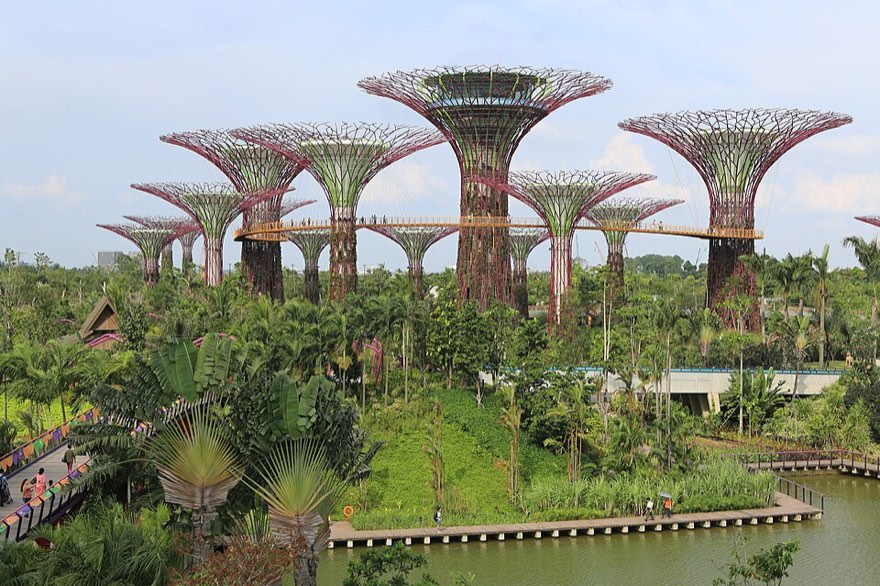
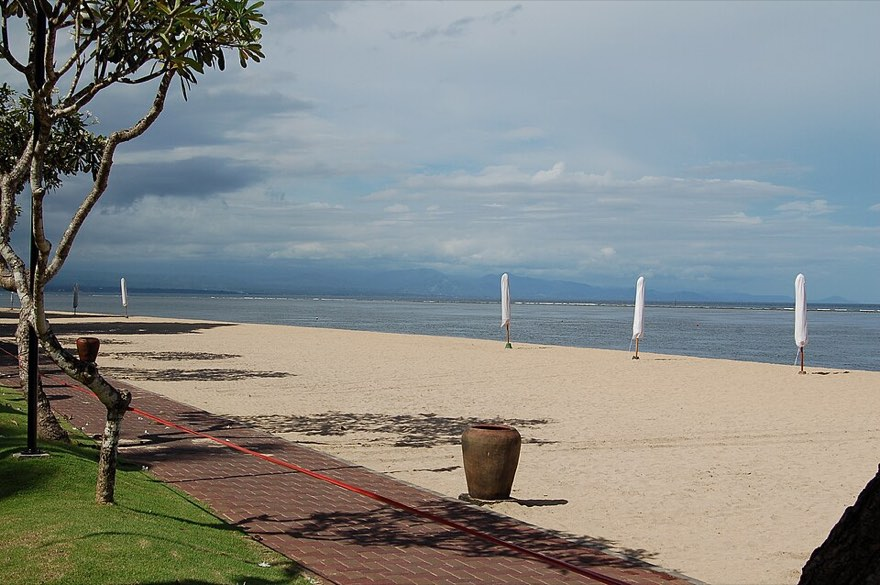
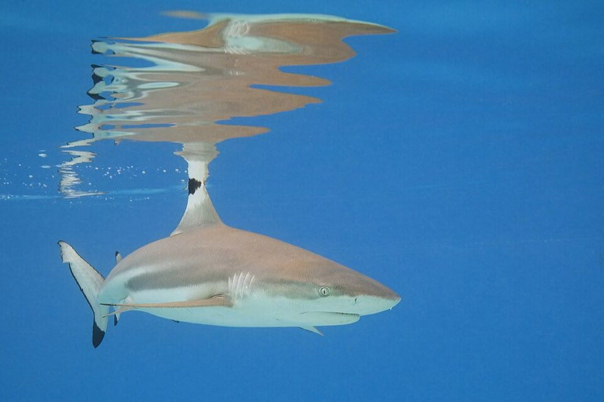
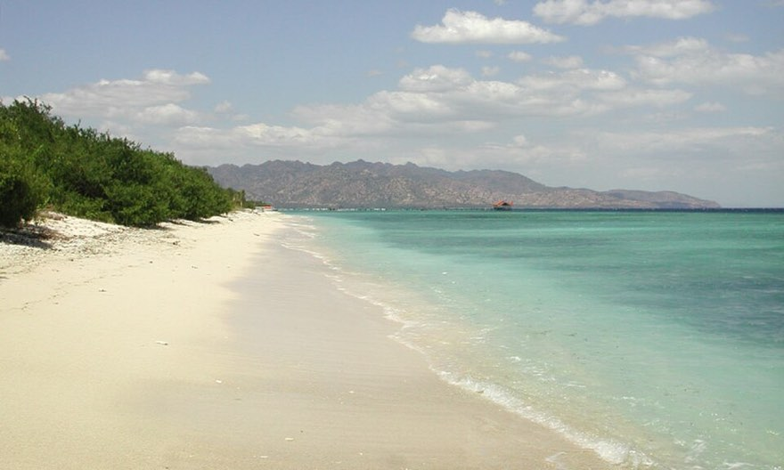

부킷 반도를 확대한 지도야. 10/6 저녁부터 10/10 아침까지를 담았어. 케착이 끝나면 짐바란에서 저녁을 먹고 공항 앞에서 자.말레이시아와 싱가포르 구간이야. 조호르바루 에어비앤비를 베이스로 삼아 KL 반나절과 싱가포르 하루를 붙였어.
마감이 있는 준비
마감이 이른 순서로 정리했어. 위쪽 셋은 이번 주 안에 해둬야 해.
오늘
라구나, 힐튼 예약 완료 — 남은 건 현금 숙소 4곳
라구나 10.7–10.9(킹 라군뷰, 포인트+숙박권)와 힐튼 가든 인 공항 10.9는 예약을 마쳤어. 구예약이 취소 상태인지만 확인하면 돼. 남은 예약은 현금으로 잡을 4곳, 사누르, 길리, 아메드, 절벽 1박(10.6)이야. 라구나 레이트 체크아웃(10.9)은 예약 요청란에 미리 적어두자.
8.27 경
KTM Shuttle Tebrau 9.26 티켓 — 05:30 전후 남행
JB Sentral에서 우드랜즈까지 5분, 남행은 RM5야. 양국 심사를 JB Sentral에서 한 번에 끝내 코즈웨이 정체를 통째로 피할 수 있는 방법은 이것뿐이야. 예약은 탑승 30일 전에 KTMB Shuttle Online에서 열리고 몇 분 안에 매진돼. 9.26분은 8.27 전후에 열리니까 알람을 걸어두자. 놓치면 CW 버스를 타면 돼.
지금
현금 숙소 4곳 — 사누르, 아메드, 길리, 울루와뚜 절벽
사누르 9.27, 길리 9.28–10.2, 아메드 10.2–10.6(아메드 항 폐쇄로 순서를 교체했어), 울루와뚜 절벽은 10.6 하룻밤이야. 아래 숙소 후보 가운데 1지망으로 바로 걸면 돼. 전부 더블, 킹으로 지정해 두고.
지금
USS 입장권과 Express Pass
9.26(토) 날짜지정권 2매를 공식 사이트나 Klook에서 사두자. 토요일 대기를 생각하면 Express Pass도 붙일 만해.
지금
여권, 국제운전면허증, eSIM
여권은 만료일이 2027.3.27 이후여야 하고 빈 면도 1면 남아 있어야 해. 국제운전면허증은 스쿠터를 타려면 필요해(경찰이 실제로 확인해). eSIM은 말레이, 싱가포르, 인도네시아 3국을 커버하는 걸로 미리 준비해 둬. MDAC 재제출과 그랩 호출이 전부 데이터에 걸려 있거든.
9월 초
e-VOA와 다이빙, 보트, 케착 예약
e-VOA는 공식 imigrasi.go.id에서 신청하고 1인 IDR 500,000이야. 같은 주에 사누르→길리 보트(9.28 아침), 길리→파당바이 보트(10.2 오전)와 파당바이 픽업 기사, 아메드→울루와뚜 기사(10.6), Eco Dive 뚤람벤(10.3), 길리 2탱크(9.30), 케착(10.9)까지 한 번에 걸어두면 편해.
12:00Jalan Tan Hiok Nee → Jalan Dhoby 옛 상점가. 벽화, 화교문화관(무료), 1937년 문 연 베이커리 Salahuddin.
14:00더위 피해 시티스퀘어로(도보 10분). Thai Odyssey 전신 90분 — 2인 RM~260. 내일 종일 걷는 날이라 오늘 받는 게 맞아.
16:30숙소 복귀, 수영장이나 낮잠.
18:00저녁 — Kam Long Fish Head Curry(도보 10분). 2인 RM50, 일찍 닫는 날이 많으니 6시엔 도착. 대안은 San Low Seafood(그랩 15분).
19:30내일 준비: SGAC 확인, MDAC 2차 제출, USS 티켓, 여권 가방에, SGD 현금.
21:30취침. 내일 05:00 기상.
말레이시아 구간에서는 공공장소 스킨십을 접어두는 쪽이 편해. 발리는 사정이 달라서 거기선 신경 쓰지 않아도 돼.
9.26토요일싱가포르, USS

가든스 바이 더 베이 슈퍼트리
싱가포르 당일치기
제일 빡빡한 하루야. 꼭 지킬 건 06시 전 국경, 10시 USS 개장, 21시 Spectra 이 셋이고 나머지는 유동적이야.
05:00기상, 짐은 데이팩 하나.
05:20숙소 → JB Sentral 도보 10분.
05:451안 — Shuttle Tebrau 05:30 전후 편. JB Sentral에서 말, 싱 심사 다 마치고 5분 만에 우드랜즈.RM5/인, 지정 편만 탑승 가능
05:452안 — CIQ 도보 통과 후 CW1 버스로 크란지 MRT.06시 전이면 토요일도 대개 1시간 안에 통과
07:15MRT로 하버프론트.TE선 → Outram Park 환승 → NE선, 약 55분, SGD~2.5/인
08:15비보시티 지하 푸드코트 조식.
09:15센토사 익스프레스(비보시티 3층) → Resorts World.SGD 4/인, 섬 안 무제한
09:30USS 게이트 대기. 개장 전에 서 있으면 토요일 기준 한 시간을 벌어.
10:00개장. 순서는 Transformers → Battlestar Galactica → Revenge of the Mummy — 3대 라이드를 오전에 끝내. 싱글라이더 줄도 적극 활용.
13:00파크 안 점심(뉴욕 존). 오후엔 Jurassic Rapids(옷 젖으니 오후가 맞아), WaterWorld는 당일 회차표 보고 한 회.
17:00퇴장 → 비보시티 → MRT Bayfront.약 30분
18:15가든스 바이 더 베이, Satay by the Bay 저녁 — 2인 SGD 50 선.
19:45Garden Rhapsody(슈퍼트리, 무료, 15분).
20:15드래곤플라이 다리 건너 MBS 이벤트 플라자까지 도보 15분.
21:00Spectra(무료, 15분). 22시 회차도 있지만 국경이 남았으니 21시 회차로.
21:20귀환. Bayfront → DT선 → Newton 환승 → NS선 크란지.약 50분
22:15CW1 → 우드랜즈 출국 → 코즈웨이 → JB 입국(MDAC 2차 QR).토요일 밤 남행 1~1.5시간 잡아
23:45숙소 도보 10분. 바로 취침.
돌아오는 길에 쓸 MDAC를 안 냈으면 국경에서 막혀. 9.25 저녁에 제출하고 스크린샷까지 받아두는 편이 안전해.
체력이 무너지면 오후 파트를 버리고 15:30에 나와서 멀라이언 산책을 넣은 다음 같은 야경 코스로 합류하면 돼. 쇼 두 개는 지키자.
9.27일요일→ 발리, 사누르

사누르 해변
발리로 넘어가는 날
07:30기상, 체크아웃. 조식은 공항 라운지에서.
08:20그랩으로 세나이 공항.35분, RM55~65
09:00체크인. 수하물 DPS 최종 태그 재확인.
09:20Plaza Premium 라운지(보안 통과 후 1층, 05:00 오픈) — 라운지키 입장, 최대 2시간. 조식 여기서.
11:15MH1052 → 12:10 KUL. 환승 3시간 — 국제선 구역 Plaza Premium 라운지(컨택트 피어 L5, 새틀라이트, 24시간, 라운지키)에서 점심과 샤워.
15:10MH853 → 18:30 DPS 도착.
18:45입국: e-VOA 레인 → 수하물 → 세관(All Indonesia QR). 성수기 일요일 저녁이라 60~75분 잡아.
20:00그랩 픽업존에서 사누르로.30분, IDR 150~200k
20:45Maison Aurelia(또는 확정 숙소) 체크인.
21:15늦은 저녁은 Jalan Danau Tamblingan 거리의 워룽에서 먹어. 나시고렝에 빈땅 한 병이면 충분한 밤이야.
9.28월요일→ 길리 트라왕안
길리 트라왕안 동쪽 해변
보트 타고 길리로
아메드 항이 닫힌 지금은 길리를 먼저 가는 쪽이 동선에 맞아. 사누르 항이 숙소에서 5분이라 아침 배도 부담이 없어. 예약할 때는 직행(direct) 표기를 확인해. 소요 2시간 30분대가 직행이고 3시간 30분대는 누사페니다 경유편이야. 첫 배(08:00) 대신 10시대 편을 잡은 건 막벵이 8시에 열기 때문이야. 시간표와 예약은 Gilibookings에서 바로 확인할 수 있어.
06:15사누르 해변 일출 — 발리 동해안이라 해가 바다에서 떠. 숙소에서 도보 5분.
08:00조식 — Warung Mak Beng 오픈런(생선튀김 + 생선머리수프 단일 메뉴, 2인 IDR 130k). 8시 정각에 열고, 일찍 갈수록 줄이 없어.
08:45은행 ATM에서 2인 IDR 5,000,000 인출(길리+아메드 현금 생활비). 은행 부스 안 기기만.
09:15체크아웃, 사누르 항으로.그랩 5분, 신항만이라 부두 승선 — 짐 안 젖어
09:30항구 체크인 — 출항 45분~1시간 전 도착이 규정이야.
10:30사누르 → 길리 직행 보트 출항.2시간 30분, US$40/인 선, 예약 시 시간 확정, 멀미약 30분 전
13:00길리 트라왕안 도착. 항구 → 숙소, 남쪽이면 도보 10분 또는 치도모(마차) IDR 100~150k.
13:30늦은 점심 — 항구 근처 Jali Kitchen.
15:00자전거 2대 대여(IDR 60~75k/일, 대, 4일치 흥정) + 내일 스노클링 투어를 부두 앞 부스에서 예약(공용 보트 09:30발, IDR 200k/인 선, 장비 포함 확인).
17:30Sunset Beach — 물 위 그네와 아궁산 실루엣.자전거 15분, 남쪽 길로(북쪽은 모래밭)
19:30저녁 — 나이트마켓: 생선 골라 그릴, 2인 IDR 250k.
9.29화요일길리, 3섬 투어
바다거북 — Turtle Point의 주인공
거북과 수중 조각상
08:00조식 — Kayu Cafe, 스무디볼. 2인 IDR 200k.
09:15부두 집결, 공용 스노클링 보트.
09:45Turtle Point — 바다거북을 못 보고 나오는 일이 드물어.
11:15길리 메노 수중 조각상(Nest, 수심 3m) — 스노클링으로 충분해.
12:30길리 에어 상륙 점심.
15:00복귀, 해변 빈백에서 휴식.
17:30일몰 — Ombak Sunset 그네. 사진은 일몰 30분 전이 제일 잘 나와.
19:30저녁 — Pituq Waroeng(로컬 가격) 또는 Regina 화덕피자.
9.30수요일길리, 다이빙

블랙팁 리프 상어 — Shark Point의 단골
다이빙하고 자전거로 섬 한 바퀴
07:00가벼운 조식.
08:002탱크 다이브 — Shark Point(블랙팁과 거북) & Halik(산호벽). 샵은 Manta Dive / Blue Marlin / Trawangan Dive 중 숙소 가까운 곳 — 요금은 셋 다 같아(2탱크 2인 IDR 2,600k 선).
12:30점심 든든하게 — 다이브샵 부근 워룽.
13:30낮잠 + 해변.
16:30자전거 섬 일주 5.5km — 반시계 방향, 북쪽 모래 구간은 끌고 5분. 총 1.5시간.
19:30저녁 — 메인 스트립 씨푸드 BBQ.
다이빙과 비행 사이 24시간 규칙은 이 순서에서는 여유가 넉넉해. 마지막 다이빙을 아메드 10.5로 잡아도 비행(10.10)까지 닷새가 남아.
10.1목요일길리 메노/에어

길리 메노 서쪽 해변
더 조용한 섬
09:00늦은 조식.
10:00공용 호핑 보트 → 길리 메노.15분, IDR 40k/인, 오전 1~2편, 전날 시간 확인
10:30메노 서쪽 해변은 아무것도 없어서 좋은 곳이야. 수영하고 그늘에서 쉬면 돼.
13:00메노 해변 워룽 점심.
15:00트라왕안 복귀.
16:30커플 스파 90분 — 메인 스트립 워크인, 2인 IDR 700k 선.
18:00길리 마지막 일몰. 저녁 후 짐 정리 + 내일 보트, 기사 확인 문자. 보트는 젖는 승선이라 전자기기 방수팩 분리.
현금을 점검할 자리야. 아메드도 카드가 거의 안 되는 동네라 남은 일정 기준으로 2인 IDR 3,000k 이상은 들고 있어야 해. 섬 ATM은 자주 비니까 모자랄 것 같으면 아침에 미리 뽑아두자.
10.2금요일→ 아메드, 동부 관광
띠르따 강가 수궁
파당바이로 건너 동부 한 바퀴
보트가 닿는 항구가 마침 동부 관광의 입구야. 고아 라와는 파당바이에서 10분이면 가. 기사 반일 대절(IDR 700k 선)을 파당바이 픽업으로 예약해 두면 환승과 관광이 하루로 합쳐져. 우붓 대신 시데멘을 넣은 건 같은 논 풍경인데 인파가 없어서야.
07:00조식, 체크아웃, 부두로.
08:00길리 → 파당바이 보트.1시간 30분~2시간, US$35~45/인, 오전 편으로 예약
10:00파당바이 도착, 예약 기사 픽업.
10:20Goa Lawah 박쥐 사원.10분, 입장 IDR 30k/인, 사롱 포함 30분.
11:15시데멘 논 계단 — 뷰포인트 두어 곳 세워가며 전망 드라이브.
12:30시데멘 전망 워룽 점심, 아궁산 보이는 자리로. 2인 IDR 200k.
14:00띠르따 강가 수궁. 입장 IDR 60k/인, 징검다리와 잉어밥. 1시간.
15:30아메드로, 해안 능선길 45분.
16:15체크인, 스쿠터 2대 대여(IDR 70k/일, 대).
17:45Jemeluk 전망대 일몰 — 만과 아궁산이 한 화면에 들어와.
19:00저녁 — Jemeluk 해변 워룽 생선구이, 2인 IDR 250k.
렘푸양 "천국의 문"을 넣고 싶으면 시데멘 대신 렘푸양(대기 1~2시간) → 띠르따 강가 → 아메드 순서로 돌면 돼. 그 유명한 물 반사 사진은 유리판을 대주는 연출이라는 점은 알고 결정하자.
10.3토요일아메드, 뚤람벤
USAT 리버티 — 1942년 침몰 전의 실제 모습
리버티 난파선
05:45기상. Eco Dive Bali(Jemeluk) 픽업 — 뚤람벤 왕복 2탱크, 2인 IDR 2,200k 선. 9시면 단체 다이버로 물이 흐려지니 이 시간에 들어가는 게 요점이야.
06:30USAT Liberty 1차. 해변에서 걸어 들어가는 엔트리, 수심 5~30m. 스노클링으로도 상부가 보여.
08:30수면 휴식 + 뚤람벤 워룽 조식.
09:302차 — Coral Garden(얕은 산호 정원과 인공어초).
11:30아메드 복귀, 로그 작성.
12:30점심 후 낮잠, 수영장. 오후 4시까지는 일정이 없어.
16:00Jemeluk 만 스노클링 — 드롭오프 산호와 수중 우체통. 장비 해변 대여 IDR 50k.
18:00일몰 맥주, Jemeluk 절벽 카페.
19:30저녁 — Warung Celagi, 2인 IDR 150k.
10.4일요일아메드
아메드 해변
프리다이빙과 해안도로 드라이브
08:30늦은 조식 — Blue Earth Village 카페(Jemeluk 언덕, 만 전망).
상한 250만원 대비 54만원 여유가 있어. 숙박권과 마리엇 포인트, 힐튼 포인트가 남부에서 약 100만원(2인 합)을 대신 냈어. 절벽 1박은 La Joya 기준이고 Suarga, 아난타라로 올려도 여유분 안이야. 남는 돈을 쓸 곳이라면 ① 아메드 풀빌라 ② 길리 Pondok Santi ③ USS Express ④ 다이빙 추가야.
현지 실무
현금 계획KL에서는 RM300, 싱가포르는 카드 위주로 쓰고 SGD100만 챙겨. 발리는 9.28 아침 보트를 타기 전에 사누르 은행 ATM에서 2인 IDR 5,000k를 뽑고(길리+아메드 생활비) 아메드 구간에서는 IDR 3,000k 이상을 유지해. 10.6부터는 카드가 되는 동네야. ATM은 은행 부스 안에 있는 기기만 써(스키밍 조심).
데이터3국을 커버하는 eSIM은 출국 전에 설치해 둬. MDAC, SGAC 재제출과 그랩, 보트 확인 문자가 전부 데이터에 걸려 있어.
라운지키세나이(Plaza Premium, 최대 2시간), KUL T1(Plaza Premium 컨택트 피어, 새틀라이트, 24시간), DPS 국제선(Premier, Concordia)이 전부 제휴라 이 여행에서 라운지 식사가 네 끼야. TFU 국제선만 제휴가 없어. 입장할 때는 당일 탑승권이 필요하고 동반 1인 무료 여부는 카드 조건에서 확인해 둬.
전자담배 — 싱가포르 절대 금지2026년 5월 시행된 신법(TVCA)으로 소지하거나 쓰기만 해도 최대 S$10,000 벌금이야. 외국인은 기기를 압수당하고 약식 벌금(초범 S$700 선)을 물고 재범이면 입국 금지까지 가. 공항 환승 짐 속에 있는 것까지 걸려. 9.26 당일치기 때는 기기와 팟을 전부 JB 숙소에 두고 가. 같은 날 일반 담배도 싱가포르는 면세 반입이 없어서 한 갑부터 신고 대상이고 껌도 반입이 제한돼. 발리와 말레이시아는 전자담배가 합법이야(공공장소 흡연 구역 제한만 있어).
날씨9월 말에서 10월 초는 건기 끝자락이라 발리와 길리를 다니기에 가장 좋은 때야. 우기는 11월부터야.
축제2026년 녜피는 3월이고 갈룽안, 쿠닝안은 6월이라 이번 기간에 겹치는 대형 의례는 없어.
사원 복장울루와뚜와 띠르따 강가, 고아 라와는 모두 사롱이 필요해. 보통 입장료에 포함돼 있고 하나 사두면 편해.
숙소 침대성인 남성 2인은 트윈으로 배정되는 일이 잦아. 예약할 때 더블, 킹을 명시하고 확인 메일도 챙겨봐. 라구나 2박과 공항 힐튼은 킹으로 확보돼 있어.
인도네시아 신형법동거 조항은 배우자나 부모, 자녀가 고소해야 성립하는 친고죄야. 관광객에게 적용될 구조가 아니고 발리 관광지는 실제로 편안해.
청두 재입국트립닷컴 예약서에 중국 입국신고서 안내가 있어. 체류 신분에 따라 필요 여부가 갈리니 따로 확인해 둬.